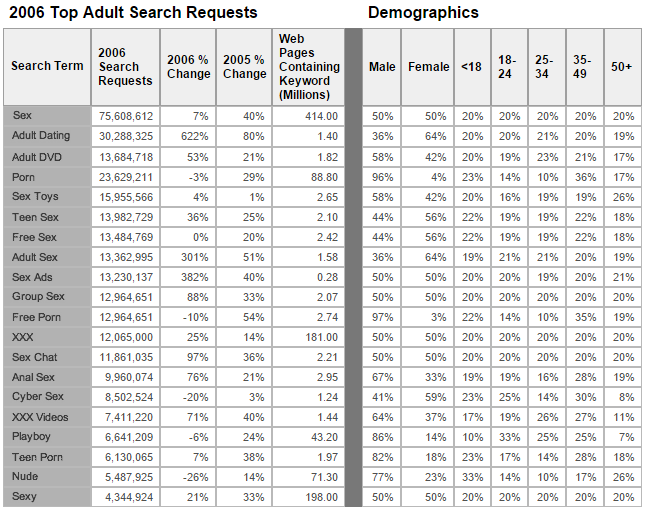

| Name | Movie | Skank level(1-10) |
|---|---|---|
| Lisa ann | Lisa ann cumshot | 12 |
| Mia Khalifa | Mia Khalifa POV | 12 |
| Riley Reid | Sloppy kissing lesbian | 10 |
Skanks |
|
|---|---|
| Skank level | Reson for beeing skank |
| Titie Skank | Big tits |
| Ass Skank | Too bit ass |
| Skank level | Reson for beeing skank |
|---|---|
| Titie Skank | Big tits |
| Ass Skank | Too bit ass |

For more information link
Random test generators (often abbreviated RTG or ISG for Instruction Stream Generator)
are a type of computer software that is used in functional verification of microprocessors.
Their primary use lies in providing input stimulus to a device under test.
In a simulation/testbench verification environment, the simulator processes input created by the RTG
and coverage monitors may be used to verify that the generator is properly testing the design.
Random test generators range in scope from simple scripts and parameterized macros that can
be created in a matter of weeks to full featured systems requiring extensive software development. Random test generators are most often created by the designing organizations.
Go to second page
this will be a link to next pageLink to other skanks
Skank link